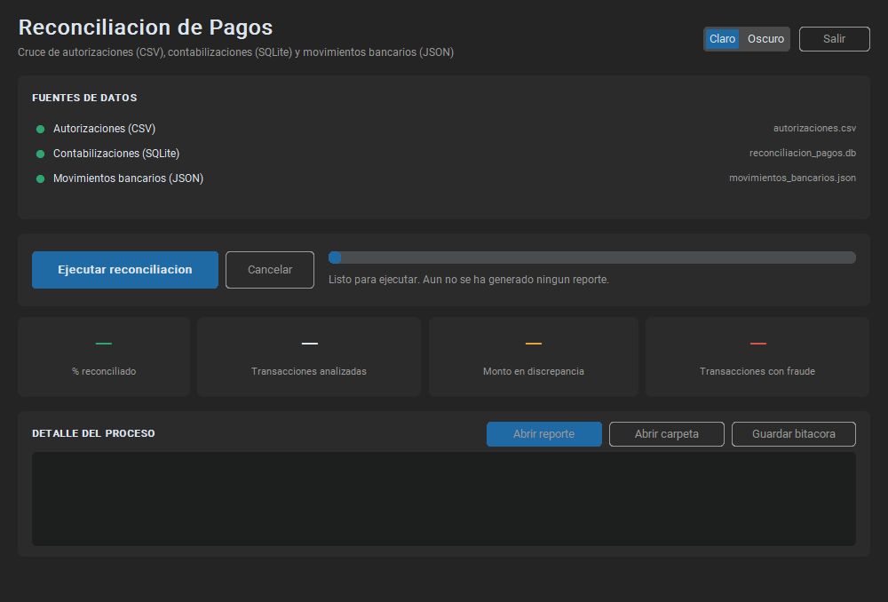
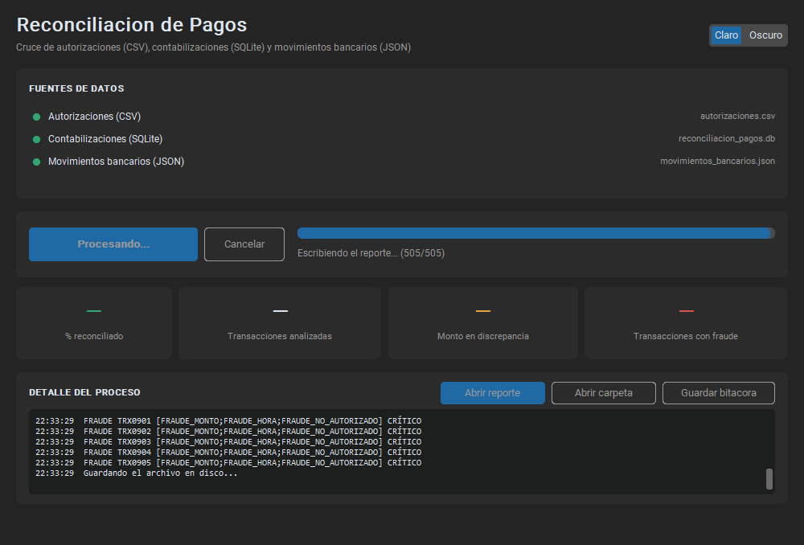
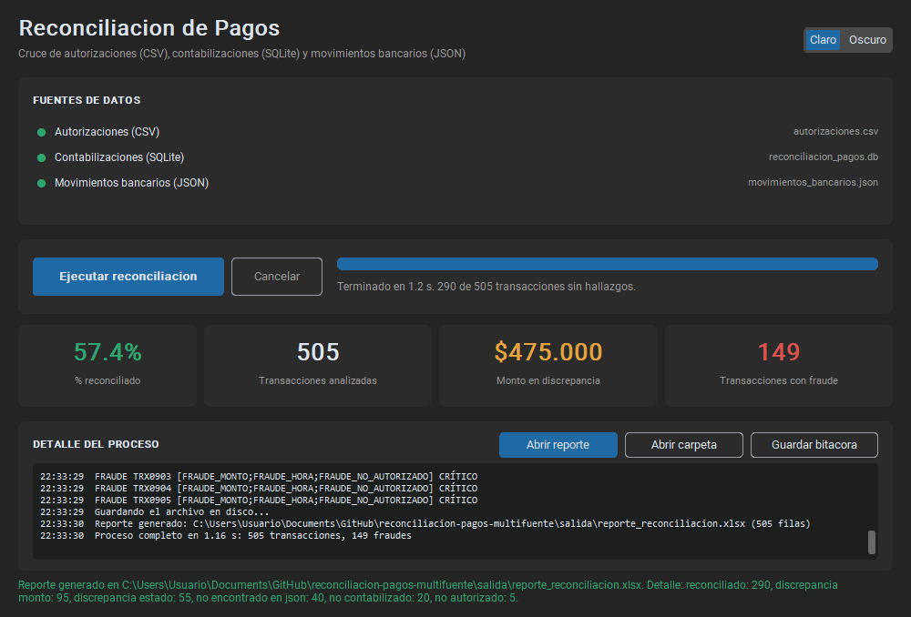

Compara tres archivos que hablan de las mismas transacciones —lo que se autorizó, lo que se contabilizó y lo que llegó al banco— y encuentra dónde dejan de coincidir. Al terminar entrega un Excel con una fila por transacción, señalando qué cuadra, qué no y por qué, además de las operaciones con indicios de fraude.
Todo el proceso tarda alrededor de un segundo y no requiere saber programar ni abrir una terminal.
La aplicación necesita Python instalado y sus dos librerías. Si alguien ya dejó el equipo preparado, salta este paso.
pip install -r requirements.txt
Los tres archivos de datos deben estar en la carpeta datos/, con
estos nombres exactos:
| Archivo | Contiene |
|---|---|
autorizaciones.csv | Las transacciones autorizadas |
reconciliacion_pagos.db | Los registros contabilizados |
movimientos_bancarios.json | Lo que reportó el banco |
Doble clic en ejecutar_gui.bat. Eso es todo.
Si faltara algo por instalar, en lugar de no hacer nada aparecerá una
ventana negra explicando qué falta. Si prefieres la terminal, también funciona
python ejecutar_gui.py.



| Indicador | Qué significa | Qué hacer con él |
|---|---|---|
| % reconciliado | Porcentaje de transacciones sin ningún problema | Es el termómetro. Si baja respecto a otros cortes, algo cambió |
| Transacciones analizadas | Total revisado, sumando las tres fuentes | Confirma que se procesó todo |
| Monto en discrepancia | Suma de las diferencias de dinero encontradas | Es la plata que no cuadra entre sistemas |
| Transacciones con fraude | Operaciones con algún patrón sospechoso | Requieren revisión; las críticas, hoy mismo |
.txt,
por si hay que dejar constancia de qué se hizo.El archivo siempre queda en salida\reporte_reconciliacion.xlsx y
se reemplaza en cada ejecución. Si necesitas conservar uno, cópialo o
renómbralo antes de volver a ejecutar.
Una sola hoja llamada Reconciliacion, con una fila por transacción y los valores de las tres fuentes lado a lado. La fila viene coloreada:
| Columna | Para qué sirve |
|---|---|
Clasificacion | El diagnóstico en una palabra |
Observaciones | La explicación en lenguaje corriente. Es la columna que responde «¿por qué?» |
Diferencia_Monto | Cuánto dinero de diferencia hay |
Nivel_Riesgo | Crítico, alto o medio, para priorizar |
Centro_Costo | A quién corresponde la transacción |
La fila de encabezados está congelada y tiene autofiltro: se puede
filtrar, por ejemplo, por Nivel_Riesgo = CRÍTICO para ver solo lo
urgente. Los montos son números y las fechas son fechas de verdad, así que se
pueden sumar y ordenar sin convertir nada.
Es_Fraude = SI y
atiende eso; después por Clasificacion distinto de
RECONCILIADO para revisar las diferencias. Lo verde no necesita que
nadie lo mire.
| Clasificación | Qué pasó | Qué suele significar |
|---|---|---|
RECONCILIADO | Todo coincide en las tres fuentes | Nada que hacer |
DISCREPANCIA_MONTO | El valor no es el mismo en todas | Revisar cuál es el correcto; la observación indica los tres montos |
DISCREPANCIA_ESTADO | La contabilidad la marcó pendiente o rechazada | La operación no se dio por buena |
NO_ENCONTRADO_EN_JSON | Se autorizó pero no llegó al banco | Pago que no se ejecutó |
NO_CONTABILIZADO | Se autorizó y salió, pero no se registró | Falta el asiento contable |
NO_AUTORIZADO | El banco la reporta y nadie la autorizó | Lo más grave. Siempre se marca como fraude crítico |
| Tipo de fraude | Por qué se marca |
|---|---|
FRAUDE_MONTO | El valor se sale de lo normal frente al resto del periodo |
FRAUDE_HORA | Ocurrió entre las 00:00 y las 05:59 |
FRAUDE_PATRON | Varias operaciones iguales, mismo banco, en menos de una hora |
FRAUDE_NO_AUTORIZADO | Movimiento bancario sin autorización previa |
La aplicación no se cierra ni muestra errores técnicos: explica el problema en la parte de abajo de la ventana, en rojo.
| Lo que ves | Qué pasó | Qué hacer |
|---|---|---|
| Un punto rojo y «No se encontraron: …» | Falta un archivo de datos | Ponlo en la carpeta datos con el nombre exacto |
| «No se pudo guardar el reporte porque el archivo está abierto» | El Excel anterior está abierto | Ciérralo en Excel y vuelve a ejecutar |
| «El archivo … no es un JSON válido» | El archivo del banco llegó dañado | Pídelo de nuevo |
| «Ocurrió un error inesperado» | Algo no previsto | Pulsa Guardar bitácora y envía ese archivo a soporte |
| Doble clic y no pasa nada | Falta Python o una librería | Aparecerá una ventana con la instrucción; ejecútala |
Para quien prefiera la terminal, o para dejarlo programado en una tarea automática:
python main.py
Hace exactamente lo mismo y muestra el avance y el resumen por consola.
Devuelve código 0 si todo salió bien y 1 si falló, que es
lo que necesita un programador de tareas para saber si debe alertar.
Sí. Cada ejecución reemplaza el reporte anterior y limpia el detalle del proceso.
No. Los tres se abren solo para leer; la base de datos incluso se abre en
modo de solo lectura. La aplicación únicamente escribe en la carpeta
salida.
Porque se analizan todas las transacciones que aparezcan en al menos una de las tres fuentes. Las que solo reporta el banco también cuentan —y son justamente las más importantes de revisar.
Aparecen todas las etiquetas separadas por punto y coma, y la columna
Observaciones explica cada una.